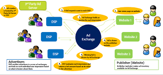
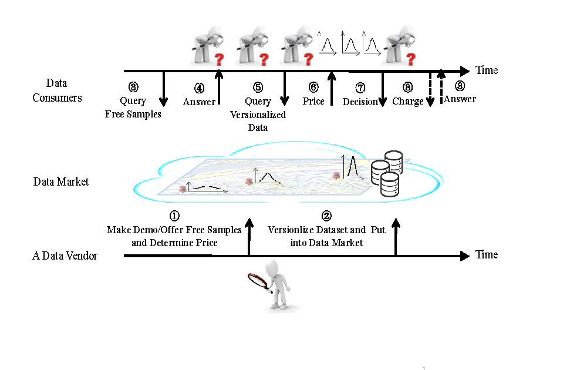
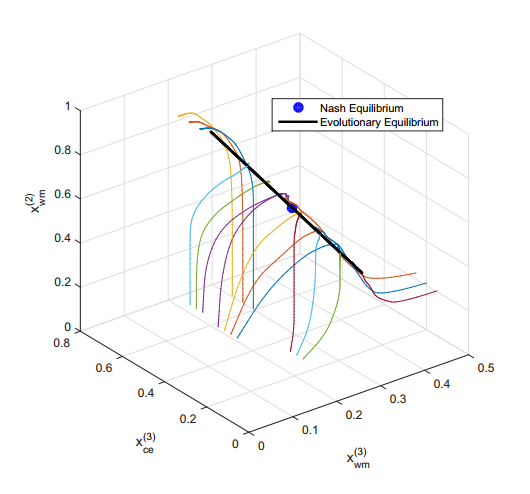

|
Zun Li
Email1: rezunli96 [at] gmail [dot] com
Email2: lizunks [at] sjtu [dot] edu [dot] cn
Hi, My name is Zun Li. I am now a senior student of Shanghai Jiao Tong University, majoring in Computer Science.
Currently I am a research assistant at Advanced Network Lab, advised by Prof. Fan Wu. I have also been a research intern at Cornell, at Prof. Qing Zhao's group.
CV /
GitHub
|

|
|
Education
Shanghai Jiao Tong University, China, from Sep. 2014 to Jun. 2018
B.S.E. in Computer Science (IEEE Honored Class)
|
|
|
Cornell University, USA, from June. 2017 to July. 2017
Visiting Student, SJTU International Workshop Program
|
|
|
Research
My current research concerns algorithmc game theory, machine learning and their applications, such as
- Data Exchange
- Computational Advertising
- Recommender System
|
|
A Top-K Ranking Based Collaborative Filtering Algorithm
Xiao Xu, Zun Li, Qing Zhao, June. 2017 - Present
Model-based collaborative filtering is a machine learning technique which have been widely applied in recommender systems. It typically conducts rank aggregation based on information of similar users or items, and thus enhances the recommendation performance. However, we found existing works either maximize full-ranking precision, or Top-K hit ratio for the algorithm output. But what users most probably care is the rank precision among the top items recommended. Most works either do not provide theoretical bounds.
We proposed a novel collaborative filtering algorithm addressing the above issues. We designed a new metric to measure the Top-K ranking accuracy, based on which we developed a new way to find neighbours and do rank aggregation for each user. The simulation results showed that our new design obtained about 10% gains against those state-of-art ones on real datasets.
We are currently improving the algorithm and providing theoretical analysis for it.
|
|  |
Computational Advertising and Data Engineering
Zun Li, Zhenzhe Zheng, Fan Wu, Guihai Chen, Sep. 2016 - Feb. 2017
In online advertising, advertisers can purchase the consumer relevant data from data marketplaces with a certain expenditure, and exploit the purchased data to guide the bidding process in ad auctions. One of the pressing problem faced by advertisers is to design the optimal data purchasing strategy in online ad auctions. In this work, we model the data purchasing strategy design as a convex optimization problem, jointly considering the utilities obtained from ad auctions and the expenditure paid during data purchasing. Using the techniques from Baysian game theory and convex analysis, we derive the optimal purchasing strategies for advertisers in diverse market scenarios. We also theoretically prove that the resulted strategy profile is the unique one that achieves Bayesian-Nash Equilibrium. Our analysis shows that the proposed data purchasing strategy can handle diverse ad auctions and valuation learning models. Our numerical results further illustrate how would advertisers behave under different strategic environments, confirming to intuitions.
This work has been submitted to AAMAS 2018.
|
|  |
Economic Techniques for Pricing in Cloud-based Data Market
Zhenzhe Zheng, Zun Li, Fan Wu, Shaojie Tang, Guihai Chen, Mar. 2017 - Aug. 2017
With the rapid growth of market demand for data, more and more data is increasingly being traded online in cloud-based data marketplaces. Within the current data trading strategies, data consumers have difficulty in making proper purchasing decisions due to the uncertainty about data quality and the inflexible pricing interface. Data vendors can deploy a data demonstration and release free sampling data to reduce such uncertainty, and charge data consumers based on the number of purchased data to enable flexible pricing. However, data vendors have no knowledge of the market responses and economic benefits of these strategies, and hesitate to deploy them in practice. In this paper, we investigate the effects of the potential data trading strategies on the objectives of both data consumers and data vendors, and derive the optimal data trading strategies under different scenarios. We show the following results: whether to deploy a data demonstration and the number of free sampling data depend on the extent of data consumers' inaccuracy perceptions over data quality. Specifically, data vendors would like to launch a data demo and release large free samples when data consumers significantly underestimate the underlying data quality, but has no incentive to conduct these strategies if consumers extremely overestimate data quality. Although flexible data pricing strategies provide convenience to data consumers, it brings less economic benefit to data vendors compared with the fixed pricing scheme, which sells the whole data set for a fixed price. We evaluate the optimal trading strategies on a real-world Taxi GPS data set, and the evaluation results verify our above insights.
This work has been submitted to WWW 2018.
|
|
Learning Agents in Data Market
Zun Li, Hongjiang Lv, Zhenzhe Zheng, Fan Wu, Guihai Chen, Mar. 2017 - Aug. 2017
In recent years, data is frequently traded on the Internet as a new kind of commodity. A large number of data marketplaces have emerged to facilitate the data trading. However, currently, there is no policy to guide the data consumers to purchase data in the complicated and dynamic market environments. In this work, we carry out an in-depth study on designing optimal data purchasing policies for data consumers. We consider three specific settings, where consumers face different levels of uncertainty. In order to derive purchasing strategies with satisfactory performances in these environments, we study the trade-off between learning the data quality and minimizing the payment. We employ Bayesian learning for consumers to estimate the data quality, and use reinforcement learning to calculate the sub-optimal policy. To reduce the computational complexity of traditional reinforcement learning, we combine Monte Carlo method and the interpolation method to design a computationally efficient reinforcement learning scheme. Our evaluation results show that the proposed algorithms achieve good performances in terms of computing expected cost and purchasing choice decision.
|
|
Online Mechanism Design with Time Varying Values
Zhenzhe Zheng, Zun Li, Fan Wu, Guihai Chen, Oct. 2017 - Present
Online auctions mechanism design for re-usable goods has wide application fields such as network storage distribution, computing resrcs allocation. Agent's types, especially values, may vary while waiting for being allocated. But the variation of agent's values are rarely discussed. We consider the mechanism design for allocation of online resrcs between agents whose values vary with time. After extending the classical pricing strategy which ensures strategy-proofness, we propose a generalized mechanism which resists bid-cheating and derive the upper bound of competitive ratio within constant factors with the corresponding offline optimal solution. We also argue that this mechanism remains effective despite of the misreport of the arrival and departure time in the case of decreasing values.
This work is currently in preparation for IJCAI-ECAI 2018.
|
|
Xpo: An Online Second Hand Market Trading System
Zun Li, Xiang Zhou, Kunyan Han, Yaowei Huang, Mar. 2016 - Jun. 2016
This was a project for Software Engineering course, advised by Prof. Jian Cao. In this project, we
- Conducted all business production of a software. Including document completion and product development.
- Analyzed possible demands of university student and teachers. Integrated design patterns into our system.
Our project was eventually honored the best project award. I was scored the highest in class (92/100, 1st/60).
|
|  |
A Hirechical Network Selection Game for HetNets
Zun Li, Kunyan Han, Mar. 2017 - Jun. 2017
This was a project for Computer Network course, advised by Prof. Weijia Jia and Dr. Na Ruan.
We studied the convergence performance of different types of network selection games in heterogeneous networks. A general priory-based throughput sharing scheme was formed that generalized a wide range of selection scenarios. We theoretically proved the convergence properties of two special cases under this scheme. The evolutionary game was then introduced, which extended the previous framework and offers a novel way to reach the equilibrium state. We compared it to the normal selection approach and distributed reinforcement learning approach in our evaluation part, where we found the evolutionary approach outperforms the others. Our modeling conformed to reality and our evaluation result offered rigorous solutions addressing the network selection problem in heterogeneous wireless network.
|
|
Professional Activities
I have been served as an externel reviewer for the following top-tier journals and conferences:
|
|
Honor & Awards
Meritorious Winner(Top 15% Worldwide), Interdisciplinary Contest in Modeling, certified by COMAP, 2016
We developed a compherensive mathematical model using methods including factor analysis and ARIMA to solve the water scarcity problem.
First Class Prize (Top 2% Provincial Level), National Undergraduate Physics Contest, certified by Shanghai Physics Academy 2015
This contest was intend to select and honor students who specialized at Physics theory studies.
Rajax Corporation Scholarship, awarded by Rajax Corporation, 2016-2017
This scholarship was awarded to top students in the experimental classes (like IEEE Honored class) in SJTU.
Litiantangren Corporation Scholarship, awarded by Shanghai Litiantangren Investment Ltd., 2015-2016
This scholarship was awarded to 30 students with excellent academical performance from the whole university.
SJTU Academic Excellence Scholarship Class-B (Top 10%), awarded by SJTU, 2016-2017, 2015-2016
SJTU Academic Excellence Scholarship Class-C (Top 20%), awarded by SJTU, 2014-2015
The SJTU Academic Excellence Scholarship was awarded to those who had ranked among the top in their major studies in an academical year.
Champion (1st/1000 Contestants), "Step-by-Step" Campus Orienteering & Quiz Game, hosted by SJTU SEIEE Student Union, 2015
One of the most amazing periods in my campus life, together with my roomates. Always enjoy solving puzzles.
|

|